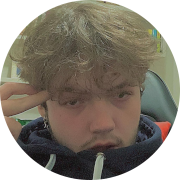

|  | Bruno Dias Wellar.Estudante de Análise de Sistemas e Desinvolvimento do Senac.Sonho de evoluir na carreira de programador. |
| Segunda-Sexta | Sábado e Domingo |
|---|---|
| 13:00 - 00:00 | Dia todo |
| Empresas | Datas |
|---|---|
| MWS Odontologia | 2019 |
| Atacadão | 2020 |
| NAVE | 2021-2022 |
| Área | Experiência |
| HTML+CSS | ⭐ ⭐ ⭐ ⭐ ⭐ |
| JavaScript | ⭐ |
| Phyton | ⭐ |
| Design | ⭐ ⭐ |